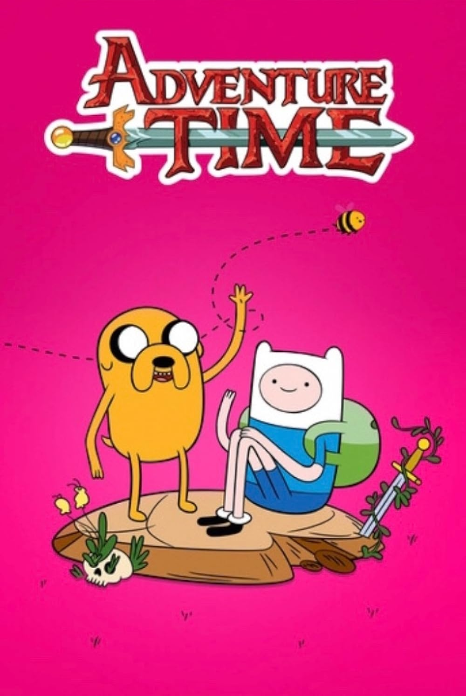
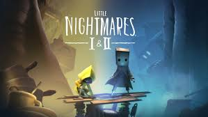
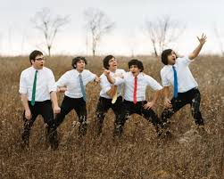
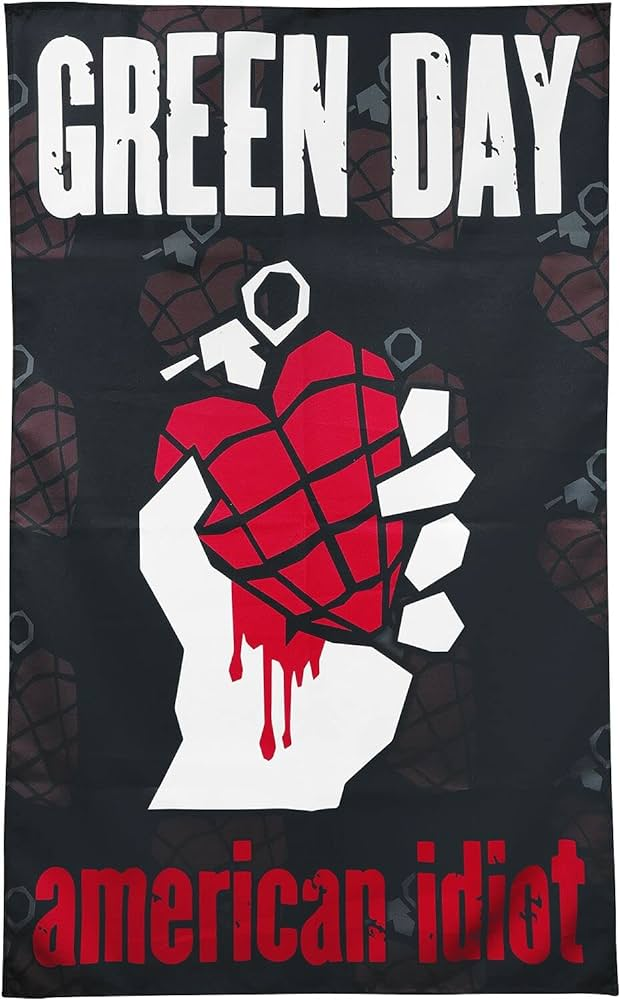
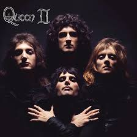
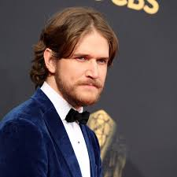
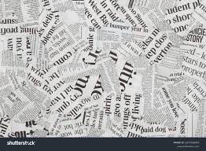
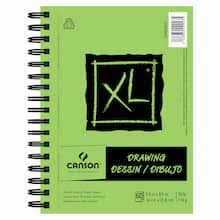
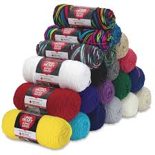

Some of my favorite shows are...
| |  | |
|
I love comedies especially dark comedies. I recently started
getting back into good omens and tbh its now my favorite!! Can't wait for s3!
I also watched Modern family 7 or 8 times through lol
Some of my favorite video games are...
 |
 |
 |  |
This is one of the websites that has different games I like to goof around on lol
I am aiming to program and create games for a living!
I really love creating stories, so to be able to do that would be amazing!
For now though I am foccusing on web design which has been really cool!
This is one of the first websites I did! hehehehe
I was playing around with different headings lol
Here are some other websites I played around with :D
I also really love to play/listen to music!!
I love to play/listen to...
|  |  |  |  |
I play a bunch of different instruments like bass, ukelele, piano,
guiatar, and I'm learning fiddle now! It's a really good challenge for me. :)
I also love to animate and draw different things too :)
Ive been doing a lot of collages recently and have been playing around with
oil pastels that I bought. I also crotchet lol
|  |  |
 |  |